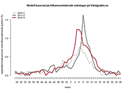

- 
Influensarapport för vecka 39, 2014
- Västra Götalandsregionens intranät
Influensaaktiviteten, som ökat de senaste veckorna, planade ut under vecka 39. Vi verkar alltså ha nått säsongstoppen, och allt talar för att vi får en betydligt mildare influensavinter än de två föregående åren.
Influensa - Regionkansliet
- Västra Götalandsregionens intranät
Få fall av influensa rapporterades säsongen 2013-2014. Totalt bekräftades 2 581 influensafall, vilket är det lägsta antalet sedan toppnoteringen under pandemin 2009-2010.
Mun- och andningsskydd vid vård av patient med influensa
Storlek: Liten (1 Mb) - - Västra Götalandsregionens intranät
Ska i första hand användas vid vård av influensapatient på IVA, vårdavdelning, mottagning, AVC, primärvård och inom kommunal vård.
Influensa – behöver du vaccineras?
- Västra Götalandsregionens intranät
Inför årets influensasäsong rekommenderar vi alla som löper ökad risk att drabbas av allvarlig influensasjukdom att vaccinera sig. Säsongens influensavaccin ger ett bra skydd ...
Närhälsan Gamlestadstorget jourcentral
Västra Götalandsregionens intranät
På jourcentralen tar vi hand om dig som behöver hjälp kvällar eller helger med sjukdom och besvär som inte kan vänta till nästa dag, vi har även öppet helgdagar. Hos oss träffar du sjuksköterska och vid behov läkare som gör en bedömning av ditt hälsoläge.
Vaccination mot influensa
- Västra Götalandsregionens intranät
Vaccination mot influensa. Information för dig som är gravid. Svininfluensa extra riskfyllt för gravida. De allra flesta kvinnor som får influensa under ...
Influensa - Socialstyrelsen
Storlek: Stor (21 Mb) - - Västra Götalandsregionens intranät
Influensa är inte farlig för de flesta, men för fler än man skulle kunna tro. Vaccination är det bästa sättet att minska risken för allvarlig sjukdom och död.
Influensa - 1177 Vårdguiden - sjukdomar, undersökningar
- Västra Götalandsregionens intranät
Influensa är en virussjukdom som är vanligast i Sverige under vinterhalvåret. Vanlig influensa kallas även säsongsinfluensa. Eftersom viruset är mycket...
Att behandla och förebygga influensa
- Västra Götalandsregionens intranät
Plötslig hög feber, huvudvärk och hosta Det finns inga sjukdomstecken som är unika för influensa, symtomen kan likna dem som man får av andra sjukdomar....
Film om influensa-vaccinering
- Västra Götalandsregionens intranät
I Sverige dog 37 573 personer i influensa under åren 1918 - 1920 enligt den ... Orsak; 4 Sjukdomsmekanism; 5 Namn; 6 I populärkulturen; 7 Film; 8 Referenser.
Information om hösten vacciantioner mot influensa
Det här dokumentet är äldre än ett år. - Västra Götalandsregionens intranät
För att öka vaccinationsgraden mot influensa i Västra Götalandsregionen så kommer i år en regional informationskampanj att genomföras.